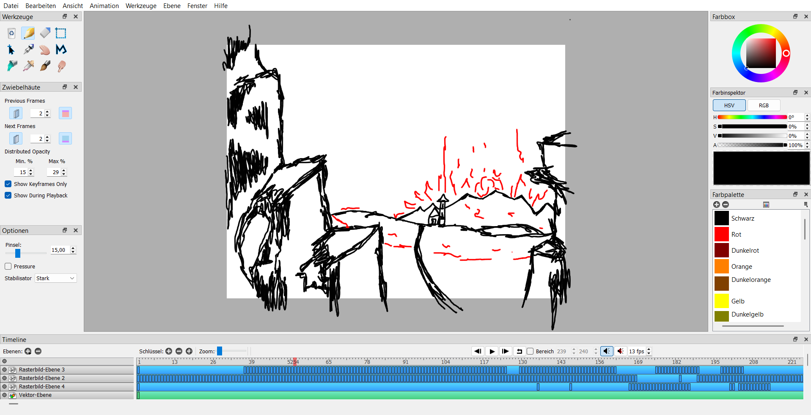
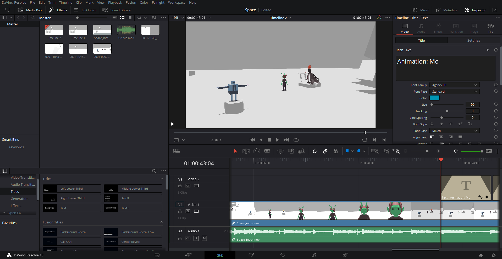
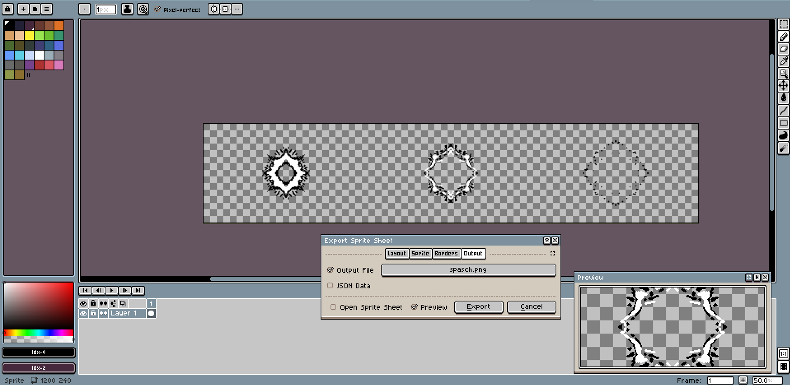
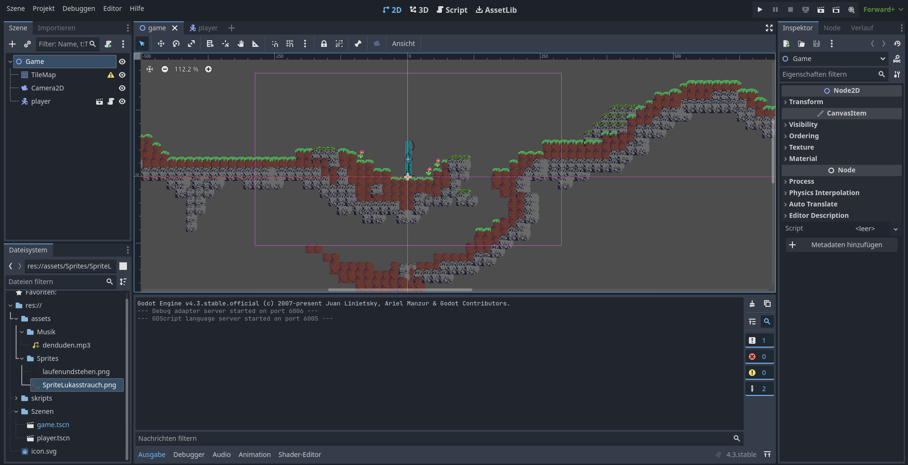
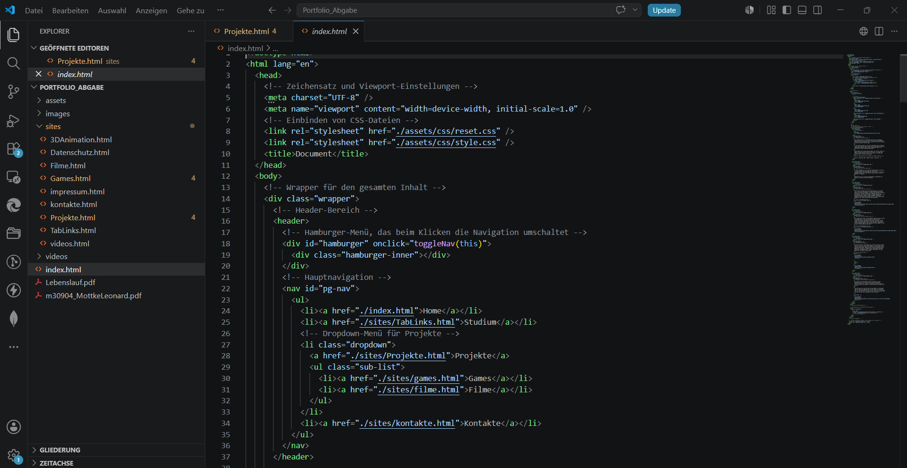
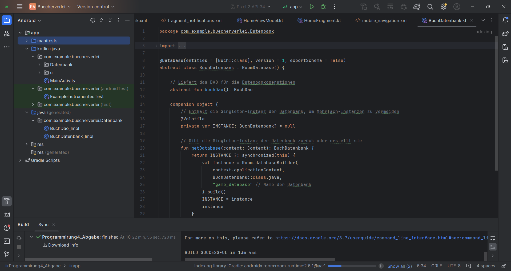
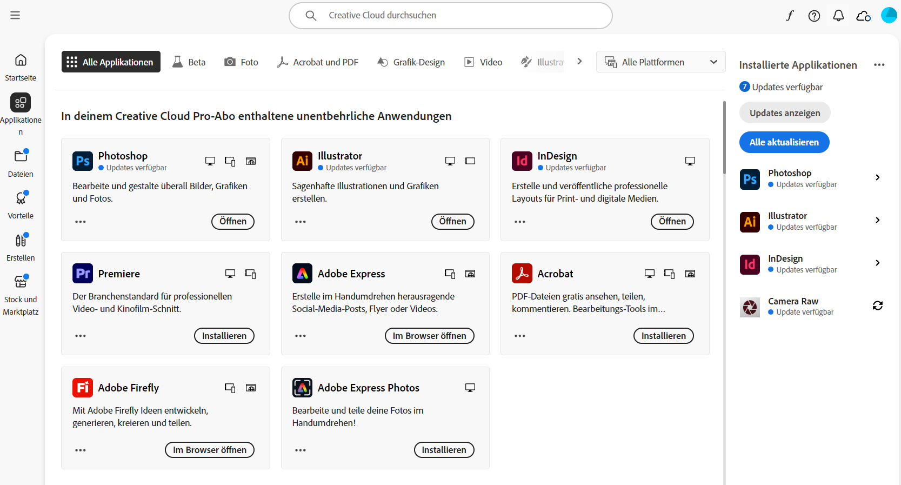
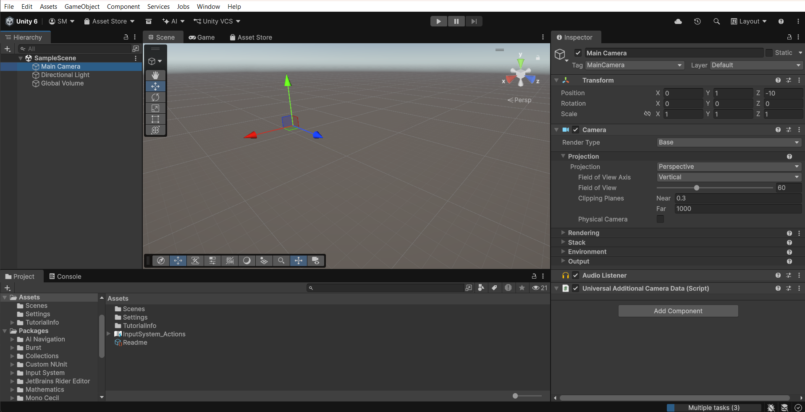

Pencil 2D
Pencil 2D ist ein open-source Animations-Tool, das ich zur Erstellung von 2D-Animationen verwende. Mit diesem Tool kann ich traditionelle Frame-by-Frame Animationen erstellen.

Pencil 2D ist ein open-source Animations-Tool, das ich zur Erstellung von 2D-Animationen verwende. Mit diesem Tool kann ich traditionelle Frame-by-Frame Animationen erstellen.

Da Vinci Resolve ist eine professionelle Software für Video-Editing und Color Grading. Ich verwende sie zur Bearbeitung von Filmen und zur Durchführung von Farbkorrekturen.

Aseprite ist eine spezialisierte Software für Pixel-Art und Sprite-Animation. Ich nutze sie häufig für die Erstellung von Pixel-Grafiken und Animationen für Spiele.

Blender ist meine Hauptsoftware für 3D-Modellierung, Rendering und Animation. Ich habe umfangreiche Erfahrung mit diesem professionellen 3D-Tool.

Godot ist eine open-source Game Engine, die ich zur Entwicklung von 2D und 3D Spielen verwende. Sie bietet eine flexible und benutzerfreundliche Umgebung.

VS Code ist mein bevorzugter Code-Editor für die Webentwicklung und Programmierung. Ich verwende ihn täglich für HTML, CSS, JavaScript und andere Sprachen.

Ich habe Erfahrung mit Android-Entwicklung und kann mobile Anwendungen für Android-Geräte erstellen. Dies ist ein wichtiger Aspekt der modernen Softwareentwicklung.

Die Adobe Creative Cloud ist eine Reihe von Softwaretools für Design, Grafik und Video-Editing. Ich verwende diese Tools regelmäßig für meine kreativen Projekte. Dazu gehören Programme wie Photoshop, Illustrator und Indesigne.

Unity ist eine leistungsstarke Game Engine, die ich zur Entwicklung von 2D und 3D Spielen verwende. Sie bietet eine flexible und benutzerfreundliche Umgebung.